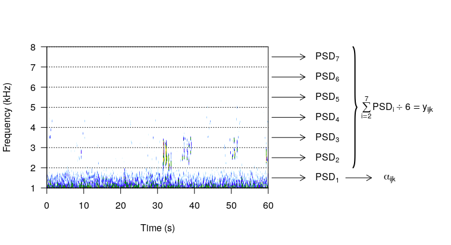

Data


where \(RC_i\) is the road covariate for a road pixel within 600 m of the recording site (NYS DOT, NYS GIS Clearinghouse).
Basic Form of Technophony (\(\boldsymbol{\alpha}\)) \(\rightarrow\) Mean: \(\boldsymbol{\beta}_{\alpha} \boldsymbol{Z}_{x} + \boldsymbol{w}\); Variance: \(\frac{1}{\phi_{\alpha}}\)
Basic Form of Biophony (\(\boldsymbol{y}\)) \(\rightarrow\) Mean: \(\boldsymbol{\beta}_{y} \boldsymbol{Z}_{\hat{\alpha}} + \boldsymbol{\nu}\); Variance: \(\frac{1}{\phi_{y}}\)
C++Kasten, Eric P., Stuart H. Gage, Jordan Fox, and Wooyeong Joo. 2012. “The Remote Environmental Assessment Laboratory’s Acoustic Library: An Archive for Studying Soundscape Ecology.” Ecological Informatics 12 (1). Elsevier: 50–67.
Welch, Peter D. 1967. “The Use of Fast Fourier Transform for the Estimation of Power Spectra: A Method Based on Time Averaging Over Short, Modified Periodograms.” IEE Trans. Audio and Electroacoustics 15: 70–73.